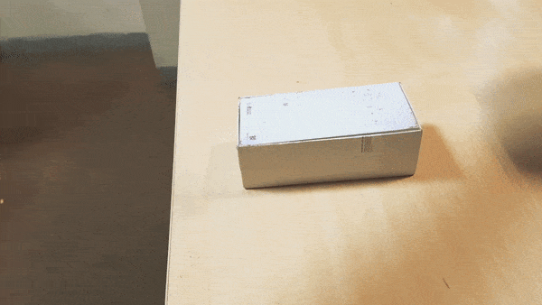
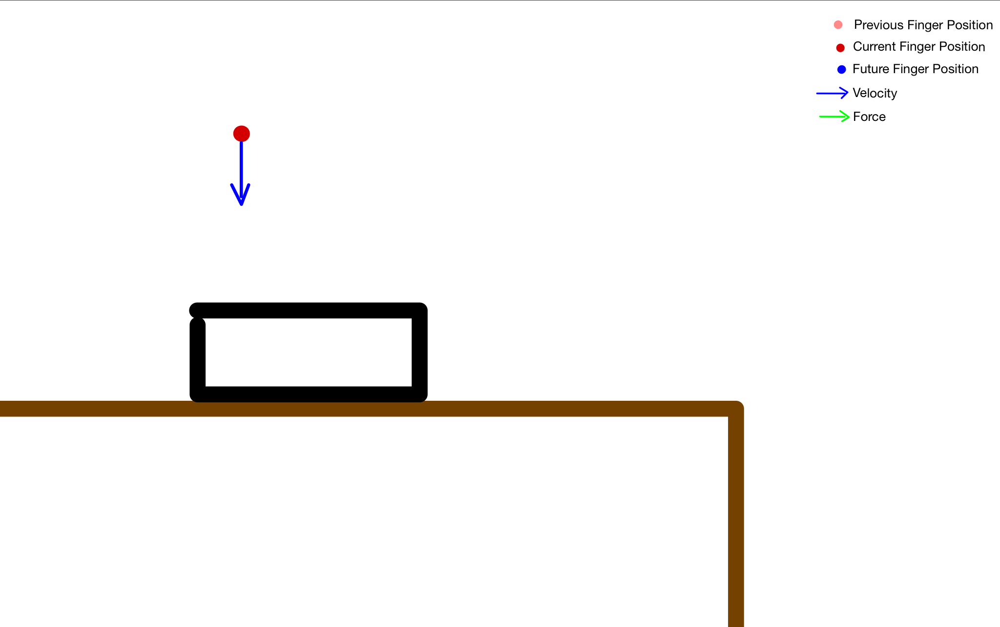
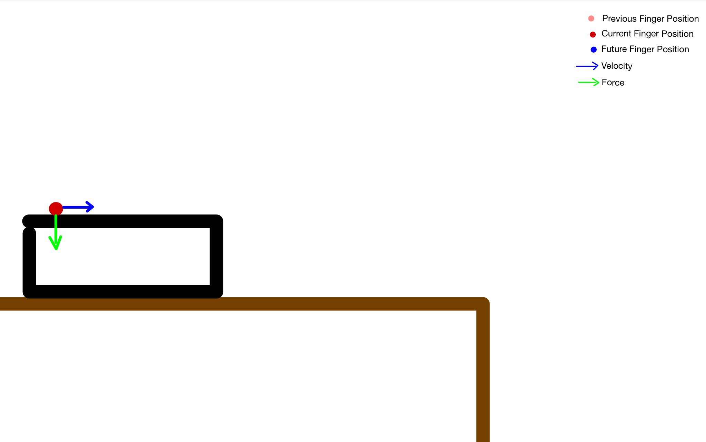
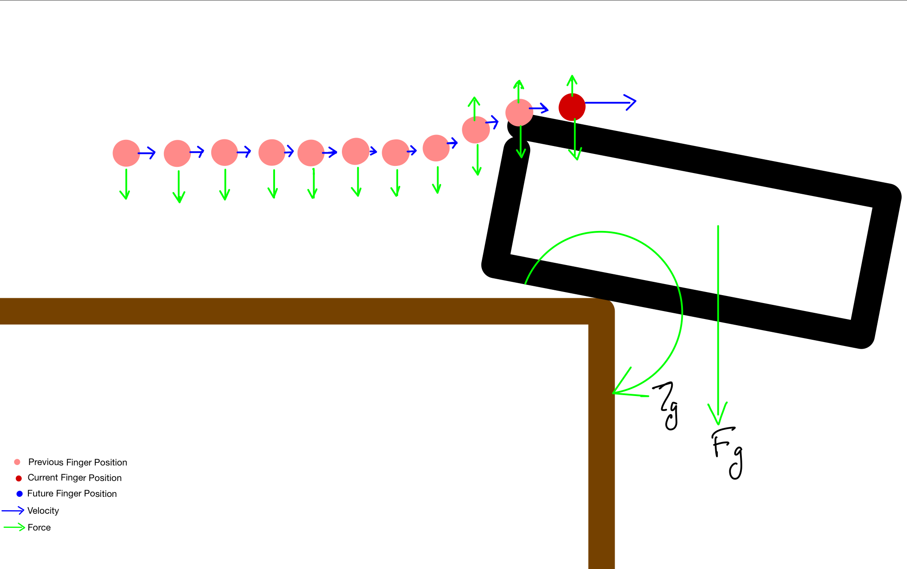
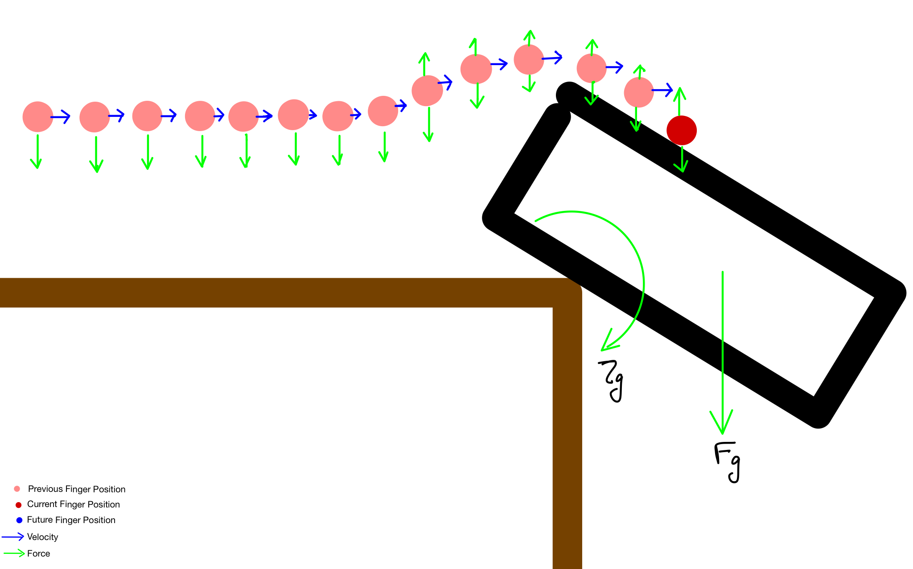
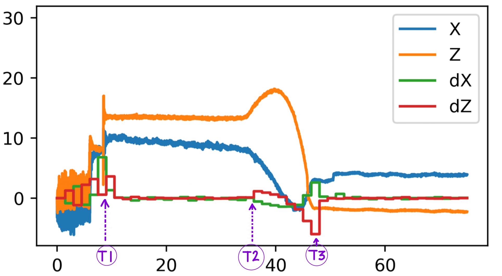
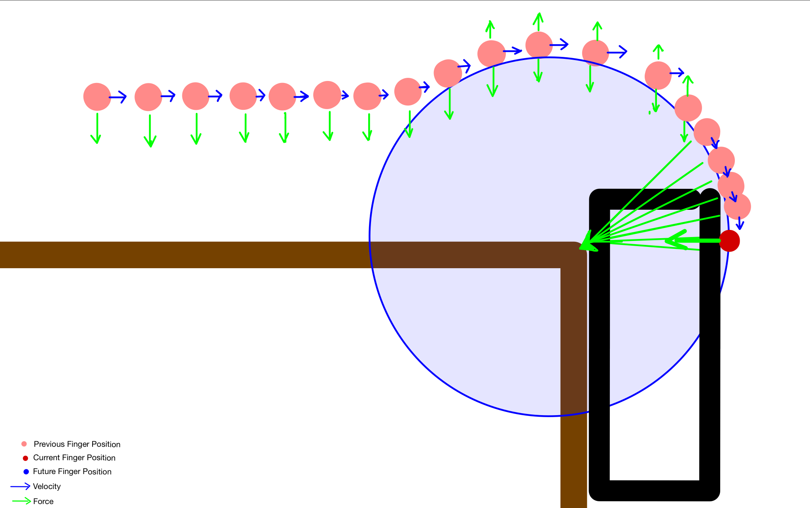

What and Why
Humans can manipulate objects in interesting ways without even grasping them. We make use of the properties of the object as well as the environment to push, flip, throw and squeeze objects.
The following video shows a human hand pushing a paper box on a table and pivoting it around an edge. We can do such a task just by relying on the forces felt on the finger.

The MIT 6.881 Manipulation class Fall 2020, which was offered entirely online, had a class project and I decided to try this. A Kuka LBR iiwa robot, fitted with a simple single finger end effector is used to achieve the task. The robot does not have the model of the object nor the environment (No prior knowledge of the dimensions of the box or the position coordinates of the edge). The workspace limitations of the robot restrict moving the object under the table, but the method could be extended for any such capable robot.
How
Since the model of the object and environment is not provided and no external vision sensors are used, proprioceptive data alone is to be used. The joint torques and position from the robot are used in combination with the impedance control capabilities of the iiwa to estimate the model parameters. This would be an almost impossible or incredibly difficult task with a conventional position-controlled stiff robot, even if equipped with a Force/Torque sensor. The entire system is implemented in Drake as a state machine. The following paragraphs detail the approach used.
Initially, the robot moves at a constant velocity in the negative z-axis. Individual joint velocities are calculated from the desired velocity using a PsuedoInverseJacobian controller. Since the iiwa does not have a joint velocity input, the computed joint velocities are integrated to obtain the joint position inputs.  While the robot is moving at such a constant velocity, the force on the end effector is being monitored. IIWA provides joint torques estimated at the 7 joints. The external wrench at the end effector is calculated using the PsuedoInverseJacobian method. When the z-axis force is above an experimentally determined threshold, the state machine jumps into the next state.
Once the finger touches the box, it applies a downward force and a forward velocity such that the resultant force is outside the friction cone of the contact between the box and table. Since the friction coefficient is unknown, the forces are determined experimentally.
The Drake Kuka driver allows us to provide a feedforward torque to each joint. The individual feedforward torque values are calculated from the desired end-effector wrench using the Jacobian transpose methods and commanded.

As the finger approaches the edge of the table, interesting things start to happen.

As the center of gravity moves past the edge, the gravitational force acting on it causes a torque centered around the edge. This torque generates an upwards force on the fingers (green up arrows). Since the iiwa operates in impedance control mode, it is not very stiff in the z-axis. So, it deviates minutely from the previous positions in the vertical direction, moving in an arc centered around the corner. The derivative of z-axis force is used to detect the beginning of this deviation and is used to transition the state machine to the next state.
Once the box starts pivoting, the finger continues moving in the x-axis, until the vertical z-axis reaction force generated by the box on the finger is zero. The gravitational force on the object would be balanced by the horizontal component of the forces on the finger and the corner. The motion of the finger is stopped and any incremental motion will cause the object to fall.

The following plot shows the z axis finger coordinates during this time and we can clearly see the arc.

The following graph shows the forces and their derivatives on the finger until the box is balanced between the finger and the corner (T3).

- From 0 to T1, the finger moves down at the constant velocity. The force readings are quite noisy when the finger is not in contact with anything and the accuracy is only +/-5N.
- The spike at T1 is caused by contact with the object.
- From T1 to T2, The finger moves towards the edge, applying a constant force in the z-axis.
- At T2, the box starts pivoting due to torque induced by gravity. the derivative of the force is found to be a reliable estimate to detect this rather than the raw noisy force data.
- From T1 to T3, the z-axis force peaks and then drops. It is this force that causes the compliant z-axis to deviate in position and move in an arc, which is shown in the plot of pZ (z-axis position).
- At T3, the box is balanced perfectly between the finger and the corner. The force on the z-axis drops while the x-axis force increases. The motion of the finger is stopped at this point.
The points on the arc are observed and fitted onto a model of the circle to estimate the model parameters: the position coordinate of the corner and the size of the object.

Once we estimate the center and radius from the arc, we plan a trajectory along the perimeter, starting from the current finger position and finishing at a position when the box is vertical.

The trajectory includes the positions of each frame (blue dots) as well as the forces (green arrows) at all these frames. This makes sure that while pivoting, the vector sum of forces direct towards the corner position.
The robot then moves along the trajectory. 
Once the finger reaches the end of the above trajectory, a new trajectory is planned, along the same path to pivot the box back to the horizontal position. While executing this new trajectory, fingers move along the circular path, with tangential velocity and radial force components.
Once the box is nearly vertical, the state machine transitions into a new state, in which the finger moves a little up or down to maintain a pre-determined vertical force on the box. This accounts for the accumulated position errors caused during the estimation of the model parameters. Once it is done, the state machine transitions it to the final state where the finger moves horizontally, moving the box to the initial position.
Results
The following video (3x sped up) shows the system in action.
The approach works reliably and is tested with boxes of different sizes and weights as well as for different table positions.
The following areas could be improved for better performance.
- The system cannot detect the slip that might occur. A tactile sensorized finger (GelSight?) could be used for this.
- The joint torques reported by iiwa are not very accurate and are also pose dependant. This could be improved using an external F/T sensor.
- The estimated model may not be always perfectly accurate. The inaccuracy in the estimated edge position causes a jerking motion when we start applying force towards the center.
- The finger position not only depends on the commanded position but the feed-forward torque also, this makes the transition between feed-forward torque control mode and trajectory execution mode tricky and causes little jerks.